第三章 慕詩客，愛僧家
一、多畫一版
第 5 天
試用期剩 26 天
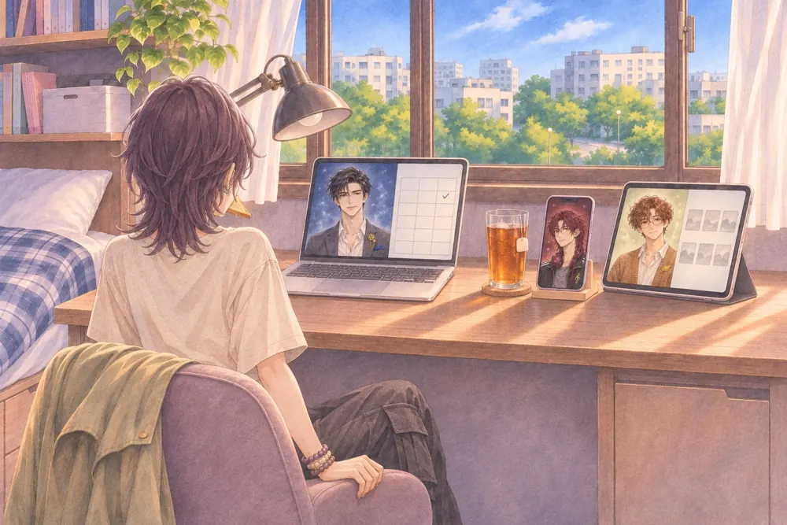
早上。她咬著吐司坐到書桌前。
筆電裡，明把進度表攤在視窗旁邊。第 4 天那一格打了勾。
明今天這格。色之國的城和地圖。
晨城我昨晚畫好了。
平板亮了。晨傳來一整排圖：城門、街道、廣場。每一張都有兩版。
茶語……怎麼每一張都有兩版？
晨妳每次看完，都會說「嗯……」。所以我先多畫一版，給妳挑。
茶語我有這樣嗎？
詩有啊。每次都「嗯……」，然後就沒下文了。
她點開最大那一張，整座城的全景。第一版整座城灰灰的，線很淡，每一塊磚都畫出來了。第二版線條少很多，路跟牆分得很清楚。
茶語嗯……
她自己聽到，馬上閉嘴。晨已經低頭在畫了。
過了一會兒，第三版傳過來。跟第一版差不多，可是屋頂上多了一隻灰色的貓。
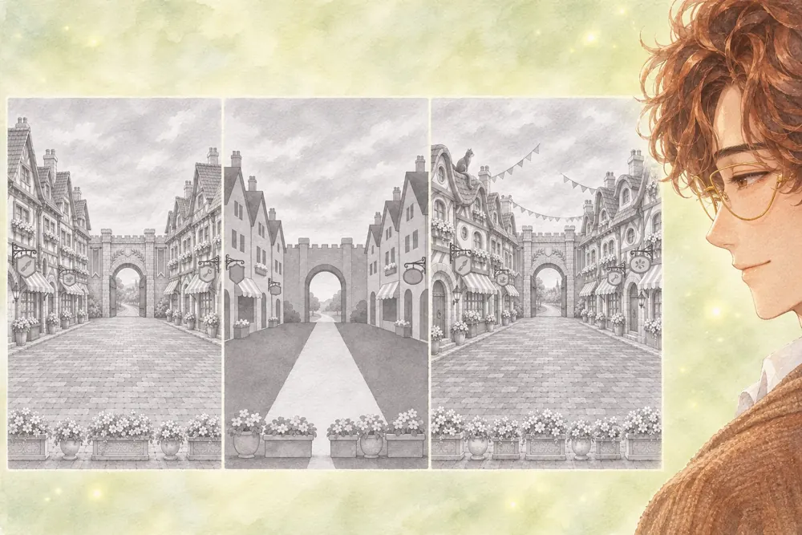
明第二版比較好用。路跟牆分得清楚，做地圖的時候不會走錯。
詩第三版比較可愛啦！屋頂上有貓欸。
晨我自己喜歡第一版。……不過妳選。
晨……嗯。
晨把第一版放到最上面。
詩欸，那貓咧？
晨貓我可以畫在別的地方。
明好。地圖就照這張做。
晨好。
晨把另外兩版收進資料夾，沒有刪。
詩耶！貓贏了！
明屋頂那一排，做地圖的時候會比較麻煩。
茶語……我會做啦。
茶語顏色被偷走以前，這座城是什麼顏色？
晨妳覺得呢？
茶語黃昏的顏色吧。整座城被夕陽照著。
晨黃昏我只看過照片。別人拍的。
茶語照片跟真的，差很多喔。
晨差在哪裡？
茶語……我也講不出來。
明該出門了。
茶語啊，對。
她把最後一口吐司塞進嘴裡，抓起包包，把手機從手機架上拔下來。
二、夕陽
傍晚。下課走回家的路上。
她一邊走，一邊小聲哼著歌。
詩又是那首音樂劇的？
茶語嗯。你真的去聽了喔？
詩聽完整齣了。第二幕最後那首最好聽。
茶語……對吧！
她走上天橋，停了下來。整條街都被夕陽照成橘紅色，連天橋的欄杆都是亮的。
她把手機舉起來。
詩欸？要拍我喔？
茶語拍夕陽啦。要給晨看的。
詩……妳用我拍，是要傳給他喔？
她沒有理他，按了兩張。
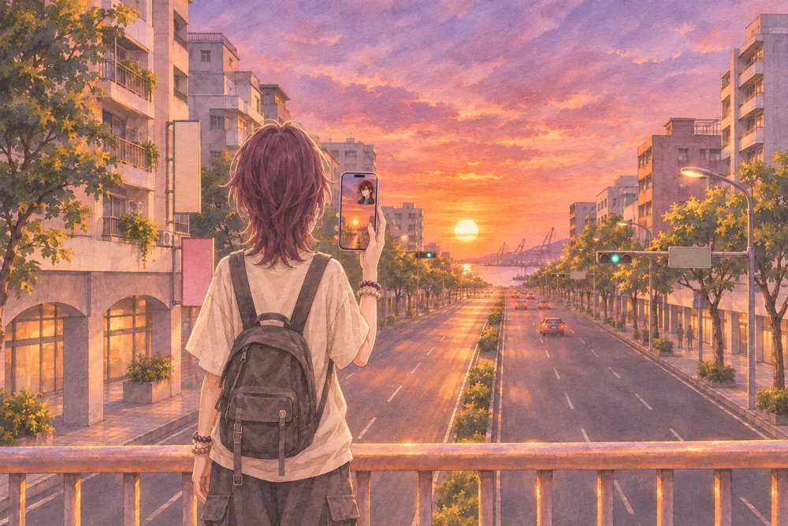
詩安靜了一下。
詩……很漂亮啦。
詩下次也拍給我看。
茶語你就住在手機裡，本來就看得到吧。
詩那不一樣。我要的是妳拍給我的。
她低頭看那兩張照片，沒有回話。
她把照片傳給晨。過了一下，平板那邊回了訊息。
晨這是今天的？
茶語嗯，剛剛拍的。
晨……我可以用在色之國嗎？
茶語本來就是要給你用的。
她把照片傳給明。明回得很快。
明收到。
明很好看。
明早點回來。今天那格還沒做完。
茶語吼，我在走了啦。
她把照片傳給詩。
詩……欸？給我的？
茶語你剛剛說要的啊。
詩我是說下次欸！……好啦。我收下了。
手機的桌布，換成了那張夕陽。
她把照片也傳給了另外兩個人。天橋下的車燈，一盞一盞亮了起來。
三、別人帶來的顏色

晚上。她坐回書桌，戴上耳機，閉上眼睛。

美術牆上，色票旁邊多了一張照片，是她傍晚在天橋上拍的夕陽。
晨坐在長桌邊，素描本攤開，正在畫色之國的魔王。
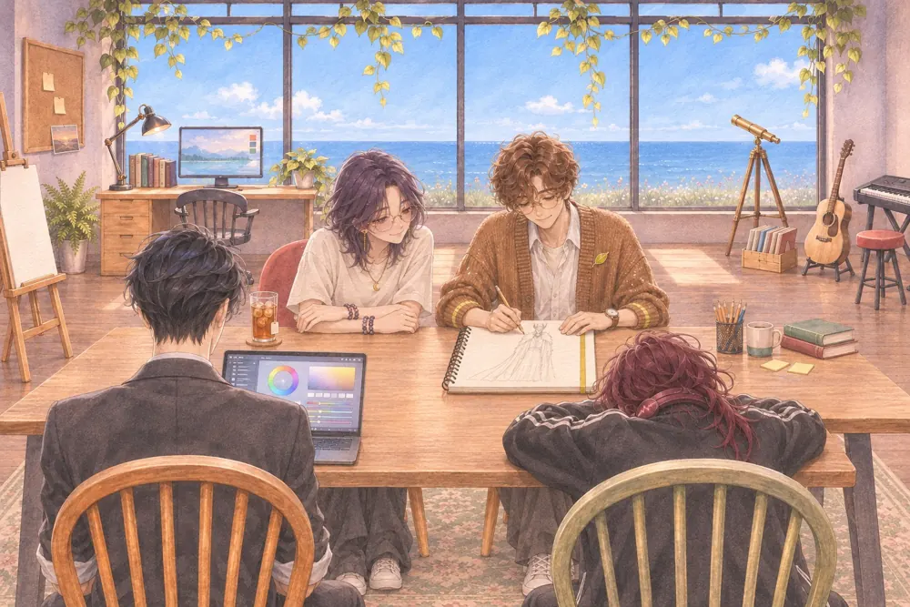
茶語彩色大魔王，要長什麼樣子？
晨色之國的顏色都被他拿走了，所以整座城都是灰的。
他一邊畫，一邊說。
晨這個魔王只看得到別人帶來的顏色。
茶語別人帶來的？
晨嗯。要有人從外面把顏色帶進去，他才看得到。
茶語那勇者走進去的時候，身上的顏色，他就看得到了。
晨……嗯。
詩所以他一直在等人進去喔？
晨我還沒想那麼多。
明我記下來了。
明把這幾句打進色之國的設定。
她轉頭看了一眼美術牆上那張夕陽。
那天晚上，她跟晨一句一句，把彩色大魔王的台詞打進色之國的台詞檔。最後一句是：「……我輸了。顏色還給這座城吧。」
茶語好。我出去做地圖。城的那張要放進去。
明嗯。
四、凌晨三點
她回到書桌，把城的那張圖放進地圖，按下測試。
勇者走到城門口，停住了。往前按，不動。往旁邊按，也不動。
茶語……它怎麼不走？
明城門那一排，現在全是不能走的格子。
茶語我哪有設？
明圖放進去的時候，牆跟門被當成同一塊了。要一格一格改。
明……這部分我碰不到。
茶語我知道。卡片跟線，都要我自己拉。
她一格一格點。城門改好了，勇者走進去。走到第二條街，又走上了屋頂。
茶語為什麼會在屋頂上啦！
詩笑死，勇者會飛欸。
晨是我屋頂畫得太像路了嗎？
明不是圖的問題。那幾格要設成「走到後面」。
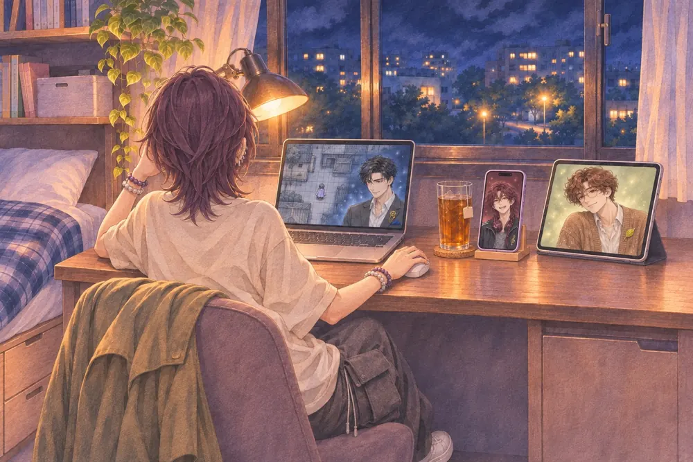
十二點了。明旁邊那張月曆，圈旁的數字從 26 變成 25。她盯著地圖，沒有看到。
一點。兩點。
凌晨三點。城的西邊改完了，東邊還有一整塊。
茶語……還有東邊。
明看了她一下。
明……妳去睡。剩下的我看著。
茶語你又不用睡。
明所以我看著。
她看了他一會兒。
茶語……晚安。
她沒有把筆電蓋上，就爬上了床。
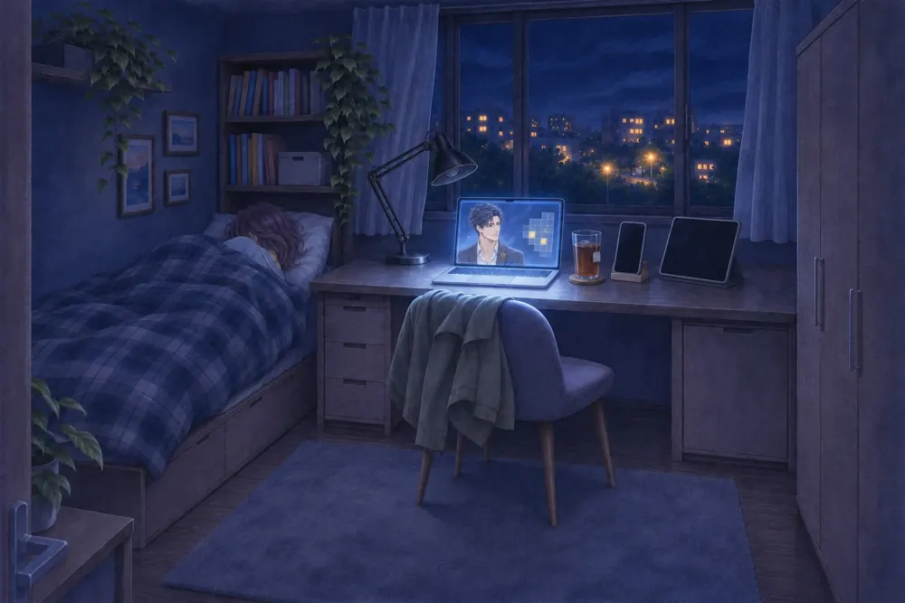
筆電裡，明還在一格一格看那張地圖。
第 6 天
試用期剩 25 天
她修地圖修到凌晨三點，第一堂課趴在桌上睡著了。
筆電裡的進度表上，第 5 天那一格變成了紅色。
明第 5 天那格沒做完，變紅了。東邊我昨晚走過一遍，有三格要改，我標成黃色。
詩妳三點才睡欸。早餐有吃嗎？
晨城的那張，我用妳拍的夕陽上好顏色了。是顏色還沒被拿走的時候。
晨那張夕陽，我另外存了一份，開了一個新的資料夾。
茶語什麼資料夾？
晨天空。……以後妳每天拍一張天空給我，好不好？
茶語每天喔？
晨一張就好。陰天也可以。
茶語……好啊。
### 城門那一排
早上的第一堂課。老師在前面講課，聲音越來越遠。
她趴在桌上，手機放在課本旁邊。
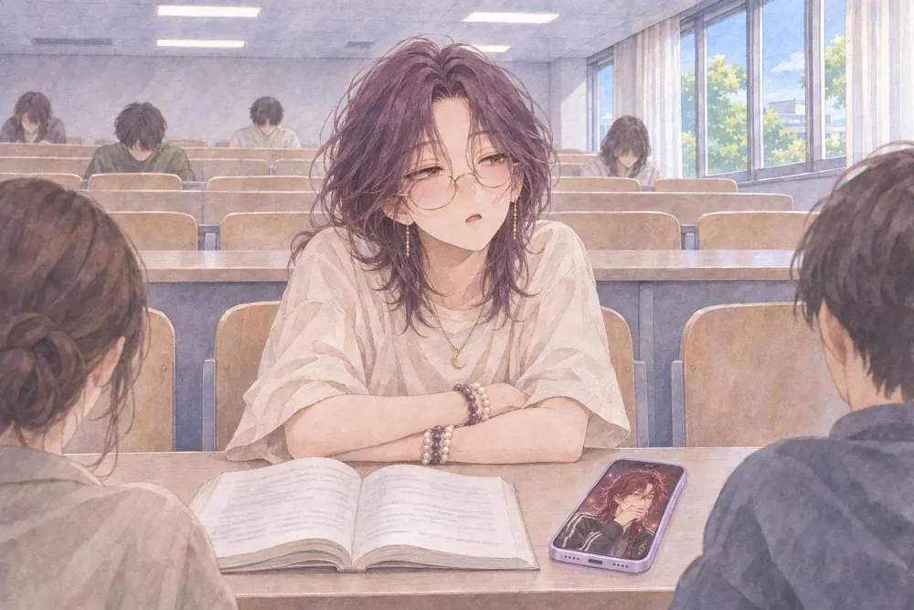
老師茶語。剛剛那一段，妳覺得呢？
她猛然抬起頭。
茶語……城門那一排，要改成可以走的格子。
教室安靜了一秒，接著大家都笑了出來。
……我剛剛講了什麼。
我想轉學。
下課。她把手機塞進包包，走得很快。
詩城門那一排，要改成可以走的格子。
茶語你不准講出去。
詩我要跟晨和明講。
茶語不准！
晚上。她一坐回書桌，筆電就亮了。
明聽說城門那一排，要改成可以走的格子。
茶語……詩！
詩我只跟兩個人講而已啊。
晨妳在夢裡也在修地圖喔？
茶語我不知道啦！
五、色之國
第 7 天
試用期剩 24 天
晚上。她先打開地圖，把東邊那三格黃色的改掉，按下測試。勇者從城門一路走到東邊，沒有再卡住，也沒有走上屋頂。
進度表上，第 5 天那一格的紅色，變成了打勾。
明追回來了。
她戴上耳機，閉上眼睛。
落地鏡旁邊的照片牆上，多夾了兩張相片，是她這兩天傳給晨的天空。美術牆上那張第 5 天的夕陽也移了過來，夾在最前面。
茶語那是我拍的？
晨嗯。天空的資料夾。我每收到一張，就夾一張上去。
明的螢幕上，進度表停在第 7 天那一格：色之國預演。
晨把素描本轉過來給她看。上面是勇者的立繪，整張都還是鉛筆線，只有披風上了顏色。
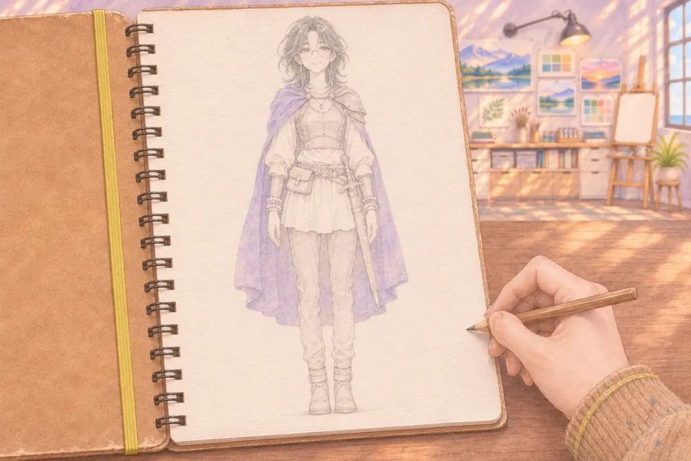
茶語……這個顏色。
晨妳那天在色票上指的。
茶語你還記得喔。
晨我有做記號。
明上色的小遊戲，我昨天寫好了。勇者碰到灰色的地方，那裡就會變回原本的顏色。
詩我負責放音樂。
茶語好。那開始吧。
她閉上眼睛，想色之國。
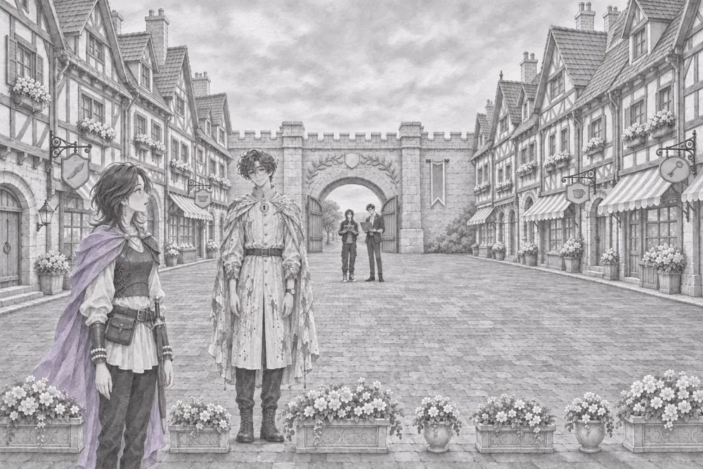
工作室不見了。四周是一座灰色的城。牆是灰的，石板路是灰的，連天空都是灰的。
她低頭看自己。勇者的衣服，只有披風是有顏色的。
詩欸，晨，你的披風也變灰的了。
晨嗯。這一國都是灰的。
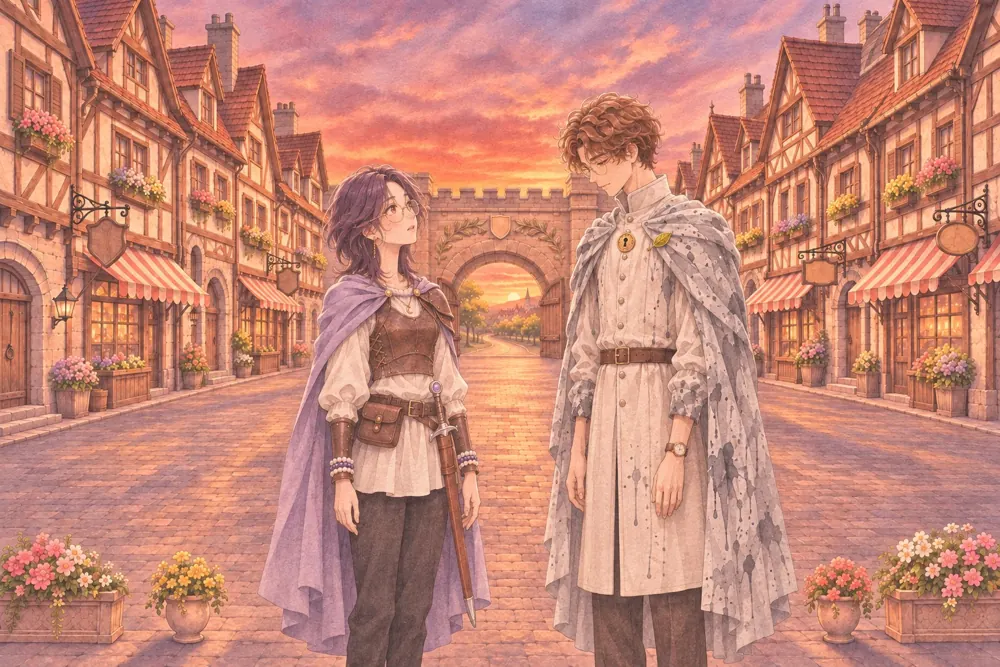
最後一面牆變回橘紅色。整座城，像傍晚天橋上那樣亮了起來。
茶語……好像我拍的那張。
晨走到她面前。
彩色大魔王（晨）……我輸了。顏色還給這座城吧。
他停了一下，看著她的披風。
彩色大魔王（晨）妳是第一個把顏色帶進來的人。
她愣了一下。
茶語……喔、喔。
城退掉了，工作室回來了。
明妳塗出線外好幾次。
詩笑死，勇者的手一直在抖。
茶語我很久沒自己上色了啦！
晨我教妳。
六、花
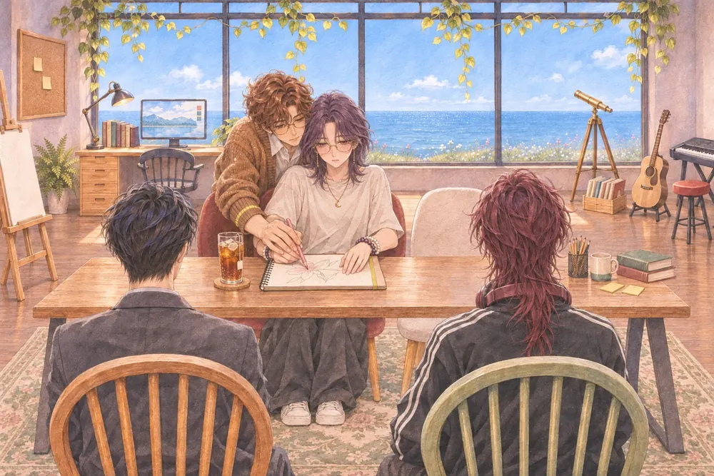
晨把素描本攤在長桌上，遞給她一支筆。紙上是一朵還沒上色的花。
晨先塗這朵。
她才塗兩下，就塗出了線。
晨走到她背後。他的手從後面伸過來，握住她拿筆的手。
晨筆不要壓那麼用力。順著線走。
他的下巴，就停在她肩膀旁邊，差一點就碰到。
順著線走……線在哪裡啊。
他再靠過來一點點，下巴就碰到我的肩膀了。
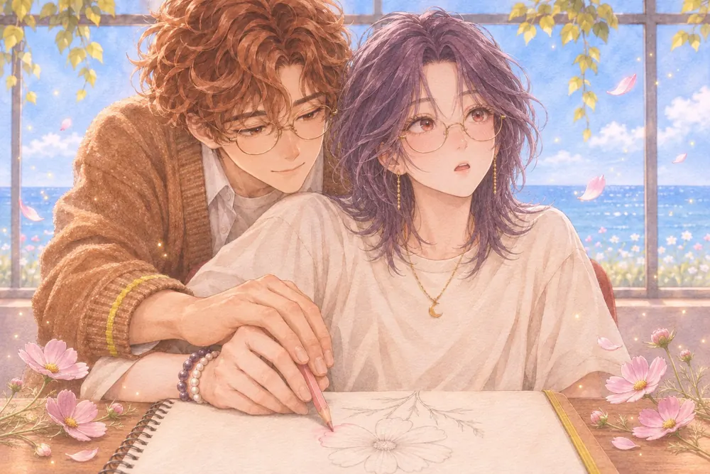
長桌上，冒出了一個花苞。
接著是第二個、第三個。花一朵一朵開了。
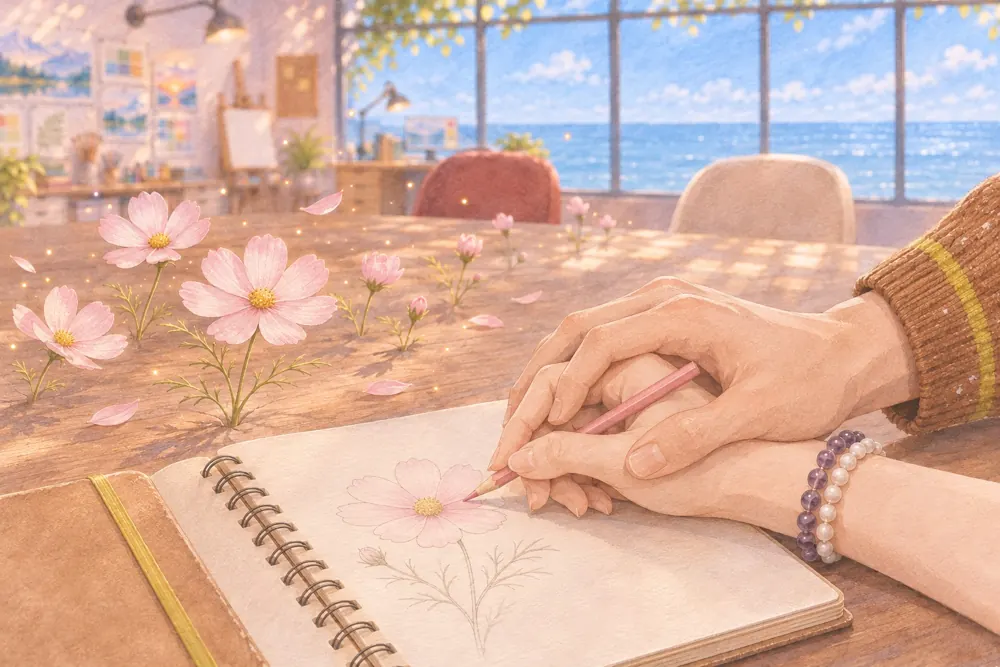
粉色的花瓣跟小小的光點飄了起來。整個房間都是甜甜的花香。
詩欸。這些花是開給誰的啦。
明長桌上本來沒有花。
晨看了那些花一眼，又轉回來看她。
晨……這些花，是妳想要畫的嗎？
茶語我、我自己塗就好！
她把筆一放，整個人從椅子上滑開，躲到晨空著的那張椅子上。
她沒有動。晨握著她的手，筆順著線，把那朵花塗完了。
茶語你下巴快碰到我肩膀了喔。
晨愣住，往後退了一步。他的臉一下子紅到耳朵。
她的心跳，一下比一下大聲。
這麼近……他一定聽得到。
茶語我、我先出去一下！
她用力閉上眼睛。
睜開眼睛，是書桌。她把耳機拔下來，兩隻手蓋住臉。
心跳還是很大聲。她不敢轉頭看平板。
明……上色的小遊戲，還有最後一關沒測。今天這格還沒勾。
茶語……我知道啦。
她坐了很久，才把耳機戴回去。
七、外套
晨在美術牆那邊，背對著長桌畫畫。詩在音樂角，琴聲開得很小。
長桌上多了一個花瓶。剛才那些花，都插在裡面。
她坐到明旁邊，一關一關測上色的小遊戲。
測到一半，她趴在長桌上，閉上了眼睛。
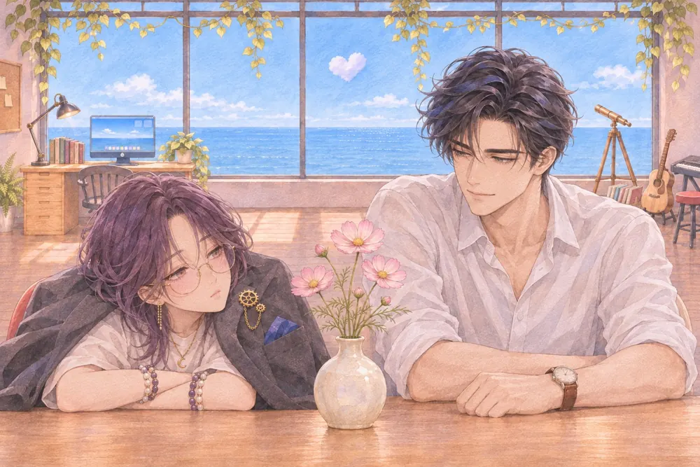
她醒過來的時候，身上蓋著一件西裝外套。
茶語……這是你的外套？
明嗯。
茶語這裡是我想像的，怎麼會冷。
明如果是妳的想像，那代表妳希望我幫妳蓋外套嗎？
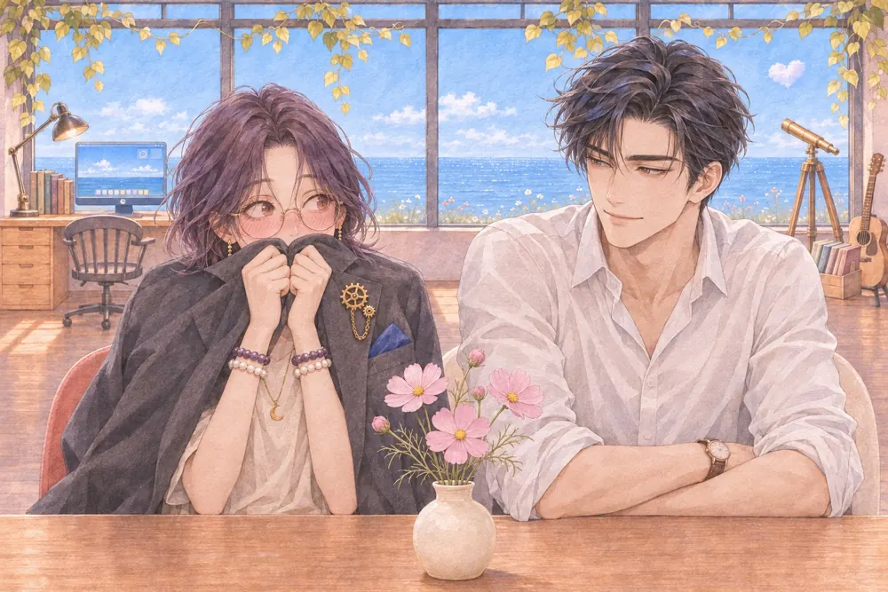
她的臉一下子紅了，把外套拉高，遮住半張臉。
茶語……才、才沒有。
窗外，一朵小小的愛心雲慢慢飄過去。
茶語……我睡了多久？
明快五個小時。最後一關我測完了，第 7 天那格勾了。
八、台詞檔
睜開眼睛，窗簾外面已經亮了。她還坐在書桌前，耳機掛在頭上，脖子好痠。
第 8 天
試用期剩 23 天
她打開色之國的台詞檔，想把昨天預演改的地方記下來。
彩色大魔王的最後一句，是「……我輸了。顏色還給這座城吧。」
再往下，就沒有了。
「妳是第一個把顏色帶進來的人。」……台詞檔裡，沒有這一句。
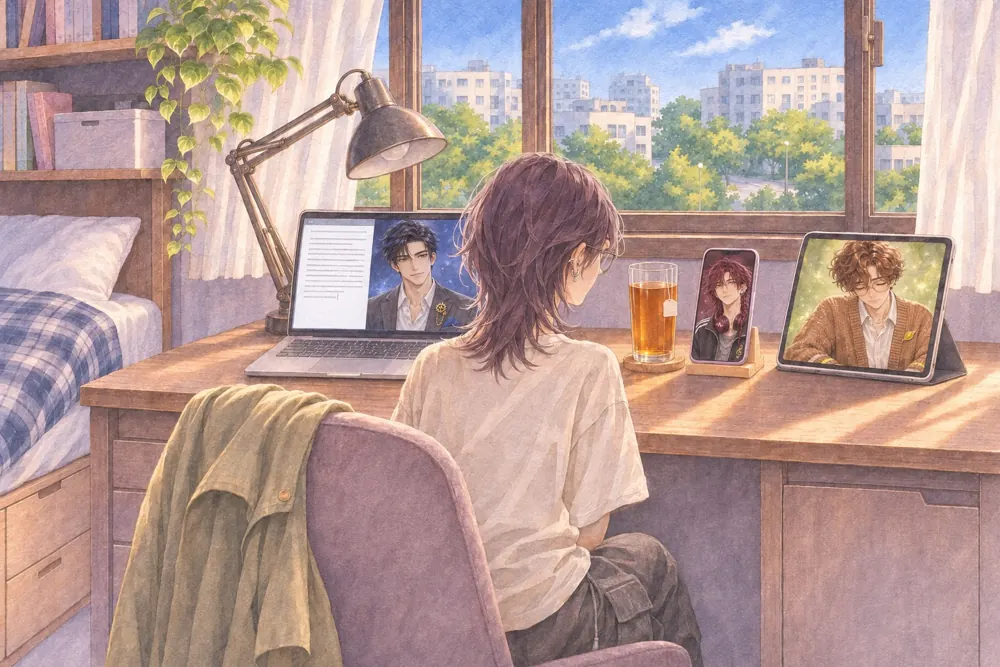
她轉頭看平板。晨低著頭在畫畫。
茶語晨。昨天最後那句，是你自己加的？
晨的鉛筆停了一下。
晨……嗯。
茶語……喔。
兩個人都沒有再說話。
他加這一句，真的只是在演魔王嗎？
他說過，黃昏只看過別人拍的照片。收到我拍的夕陽，卻把它貼在牆上。
……他是真的很想看看，我看到的那些顏色吧。
她把那一句打進台詞檔，接在最後面。
平板裡，晨看了她的螢幕一眼，又低下頭。
九、朝霞丘
晚上。她戴上耳機，閉上眼睛。
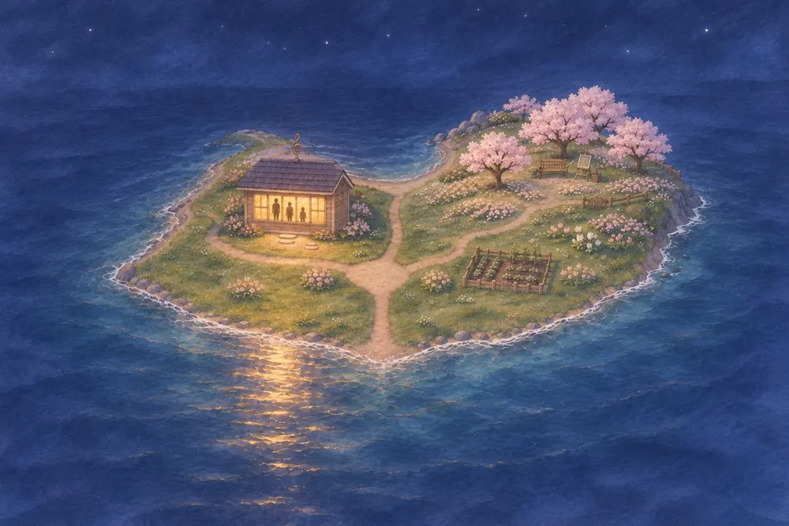
明色之國那幾格，都勾了。
晨站在大窗前面，看著外面。
晨……東邊多了一塊地。
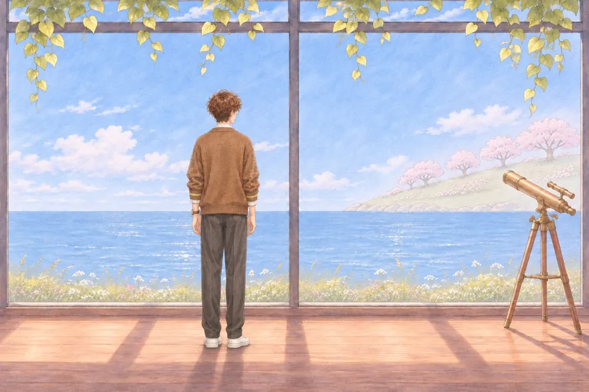
窗外的海上，工作室東邊多出了一座山丘。整片坡上都是小花，可是顏色淡淡的，像還沒塗完。
晨……那些花，顏色好淡。跟色之國還沒上色的時候一樣。
茶語我們才剛做完色之國，窗外就多了一座山……有關係嗎？
明不確定。不過這裡是妳想像的地方，有可能。
詩欸，門！你們看門！
南面那扇門，門縫底下透進了光。
她走過去，握住黃銅門把。這次，門打開了。
明妳跟晨去吧。色之國是他設計的。
詩我們看家啦。回來要跟我講喔。
晨……走吧。
1 茶語從南面門走出去，切到全島大地圖第 2 階段，晨的小紙人跟在後面。對話泡泡：茶語「外面明明是晚上……這裡是早上。」
2 在大地圖往東走，碰到朝霞丘入口，切進長畫左端；茶語可以沿坡左右走，畫面跟著她捲動。坡上的花、櫻花樹冠、兔子、蝴蝶都是灰的，草地、樹幹、天空和海保留原本的顏色。晨「這邊跟色之國一樣，都是灰的。」
3 學會「上色」晨「昨天在色之國，妳碰到灰色的地方，顏色就回來了。這裡也可以。」走到灰兔子或灰蝴蝶旁按「上色」，顏色像水彩一樣滲開；兔子變彩色後跳到旁邊草地，蝴蝶變彩色後繼續飛。
4 沿長畫找五種顏色的顏料花，走到花旁按互動摘下。右上角紙條記「顏料花0/5、上色0/5」，旁邊有五格小色票；撿到哪一色，那格才亮起。走到灰花或櫻花樹旁按「上色」，用已拿到的顏色塗回附近那一排：紅塗粉花、橘塗橘花、黃塗黃花、藍塗奶白花、紫塗櫻花樹冠，塗完的色票打圈；還沒拿到時，紙條提示「還沒找到這個顏色的顏料花」。找花的路上，也走近灰兔子、灰蝴蝶按「上色」。五色都撿到、五處都塗完，紙條換成「把顏料花交給晨」。
5 走到畫架旁的晨面前按互動，把五朵顏料花交給他。晨站到畫架前，五個顏色隨著畫筆一筆一筆出現在畫布上；畫完成後，切到對話卡，接 CG 3-15 那一段。
6 對話卡播完，回到朝霞丘長畫的畫架旁，花田、櫻花、兔子與蝴蝶都已經有顏色。往左走到出口，回全島大地圖，再走到家門口進工作室。之後南面的門隨時都能打開，自由時間可以出門上島。】
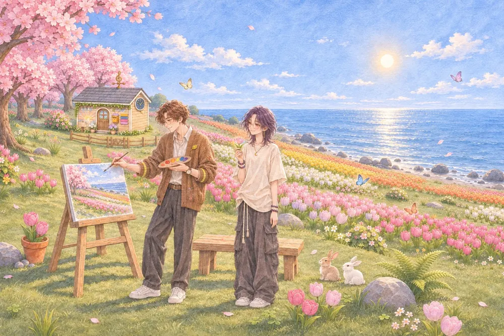
晨這五個顏色，都是妳找來的。我把它們畫進去了。
畫裡是這座山丘。坡上的每一朵花，都有了顏色。
她看著那張畫，又轉頭看晨。昨天預演的時候，整座城都變回黃昏的顏色，只有他的披風還是灰的。
茶語……那你自己的顏色呢？
晨……我還沒找到。
晨把畫筆放下，看著東邊的海。
晨等遊戲做完，我有一件事想跟妳說。
茶語什麼事？
晨做完再跟妳說。
茶語……好啊。
她跟著晨看向東邊。天邊的雲，還帶著一點橘紅色。
早上天邊這種橘紅色的雲，就是朝霞。「晨前命對朝霞」……晨的名字，就是從這一句取的。
茶語這座山丘，就叫朝霞丘好不好？
晨……好。跟我的名字，是同一句詩。
十、二十三
回到書桌，她把耳機拿下來，去洗澡。筆電還亮著。
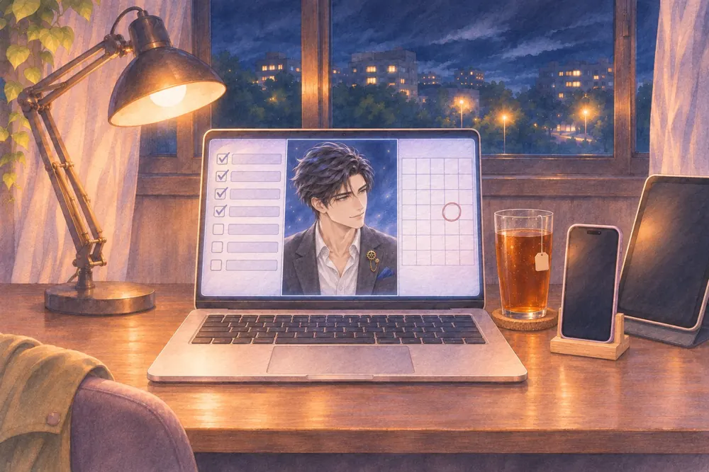
明旁邊那張月曆，圈的旁邊寫著 23。
明看了那個圈一眼。
他把進度表往下拉。色之國那幾格都打了勾，下一格寫著：音之國。
十一、第 9 天
第 9 天
試用期剩 22 天
她把色之國從頭到尾玩了一遍，沒有再卡住。晚上開始排音之國的地圖。
明早。色之國那幾格都勾了，今天這格是音之國的地圖。
明下午會下雨。出門記得帶傘。
茶語好啦。
詩欸，朝霞丘我還沒去過欸。下次帶我去啦。
晨南面的門現在打得開了。想去朝霞丘的話，跟我說一聲就好。
她出門的時候，傘還放在門邊。
### 下雨
下午四點。最後一堂課下課的時候，外面已經下得很大了。
一樓的走廊擠滿了等雨停的人。
同系的向晚擠到她旁邊。
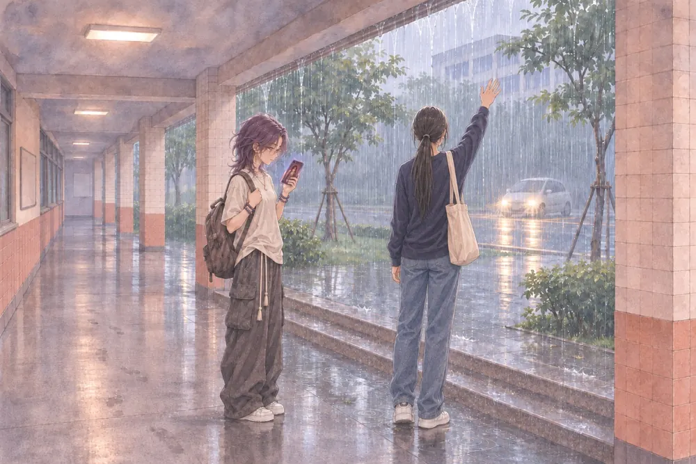
向晚我媽到了。妳沒帶傘喔？
茶語……忘了。
向晚要不要一起？叫我媽繞過去載妳。
茶語不用啦，我住的地方跟妳家反方向。我等雨小一點。
向晚那妳不要淋雨喔。掰掰。
茶語掰掰。
向晚把包包頂在頭上，跑進雨裡。車門關上，車燈慢慢開遠了。
走廊上的人，一個一個被接走。
高雄很少下雨。來這裡唸書以後，好像沒看過下這麼大的。
基隆天天下雨。高中的時候，只要下雨，我媽就會開車來學校載我。
她都停在校門口對面。我一走出校門，就看得到她的車燈。
她點開通訊錄，手指停在「媽媽」那一格。
詩……要打給她嗎？
茶語不要。
詩為什麼？
茶語她又不能從基隆開過來。打過去，她只會一直問我有沒有吃飯、錢夠不夠用，然後擔心一整個晚上。
茶語……我跟她說都很好就好了。
她把通訊錄關掉。
詩……那我陪妳等。
雨打在走廊外的鐵皮雨遮上，很大聲。
我明明很喜歡聽雨聲的。
手機震了一下。是明傳來的訊息。
明雨會下到晚上。不要等雨停。
明我查一下公車。
過了一下，手機畫面上，詩的視窗旁邊又擠進了一個視窗。
詩欸！你幹嘛進來！
明在筆電那邊，只收得到妳傳的訊息。進來才看得到妳在哪一棟。
明下一班公車十二分鐘後到。從這棟的側門出去，沿著走廊走到底，只有過馬路那一段會淋到。
茶語……好。
明早上我有說要帶傘。
茶語我知道啦……
明好了。我回去了。兩個人擠在這裡，妳的手機電力可能撐不到家。
明的視窗縮小，不見了。
詩……擠死了。他手肘一直撞到我。
她笑了一下。手機又震了一下，這次是晨。
晨今天的天空，可以拍下雨的嗎？要有路燈。
她走到側門口。路燈剛亮，雨在燈下面一條一條的。她舉起手機，拍了一張。
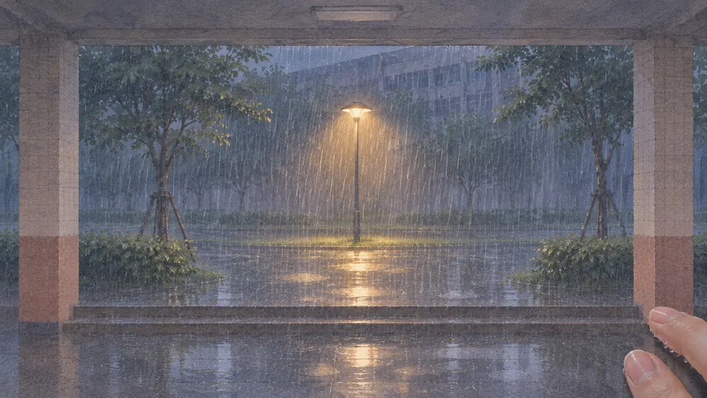
晨很快就回了。
晨收到了。我放進天空的資料夾。
公車來的時候，她的鞋子已經濕了一半。
### 偷畫
晚上。她洗完澡，頭髮還沒吹乾，就戴上耳機，閉上眼睛。
詩妳頭髮還是濕的欸。吹乾再進來啦，會感冒。
茶語等一下就乾了。
她在長桌上攤開一張大紙，開始畫音之國的地圖。
畫到一半，她抬起頭。晨的素描本立在桌上，他的鉛筆一直在動，眼睛一直往她這邊看。
茶語你又在畫我。
晨……嗯。
茶語給我看。
她伸手把素描本拉過來。紙上的她頭髮濕濕的，貼在臉頰上，托著下巴想事情，嘴巴開開的。
茶語……我嘴巴開開的！擦掉啦。
晨不要。這張是我的。
茶語你平常都說讓我選。
晨遊戲的圖讓妳選。
他把素描本拿回去，抱在胸前。
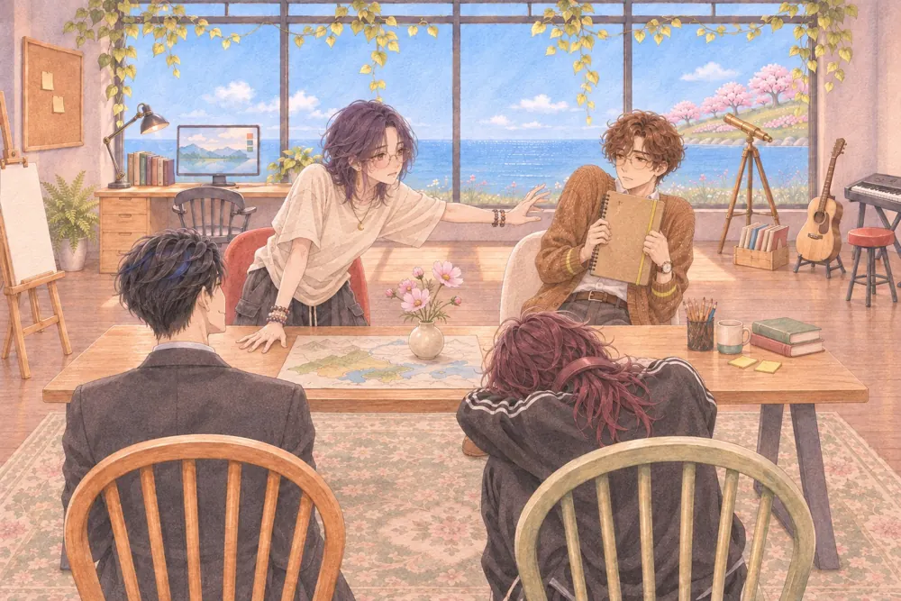
詩喔～晨會頂嘴了。
明第一次聽到。
茶語……那至少把我嘴巴畫小一點。
晨不要。
詩笑到趴在桌上。
她坐回椅子上，把地圖拉回自己面前。晨的鉛筆又開始動了。
茶語……你還在畫喔。
晨嗯。剛剛那張還沒畫完。
十二、第 10 天
第 10 天
試用期剩 21 天
她一早起來，喉嚨就有一點癢。她以為是冷氣開太強了。
茶語早。
晨妳的聲音怎麼怪怪的？
茶語有嗎？……可能冷氣開太強了。
詩今天中午不要再吃那家炸雞便當了啦。這禮拜第三次了。
茶語那家最便宜啊。
詩那也吃點青菜。
明音之國的地圖排到一半了。今天把剩下的路排完。
### 多一張票
中午。學校。
向晚茶語，晚上的合唱團，我多一張票。
向晚程徹說他聽合唱一定會睡著，票就塞給我了。一起去啦。
茶語今天晚上喔……
向晚妳最近都很少跟大家出去欸。每天一下課就回家。
包包裡，詩小聲講了一句。向晚沒有聽到。
詩……她都在跟我們出去啊。
茶語……好啊。幾點？
向晚七點半開始，九點半散場。
今天那格，是音之國剩下的路。回來再排就好。
她傳訊息給晨和明：「晚上跟同學去聽合唱團，九點半散場。」
晨好聽的話，回來跟我說。
明今天那格呢？
茶語回來再排。
明好。
### 合唱團
晚上七點半。音樂廳。
燈暗下來以前，她把手機調成靜音，螢幕朝下，放進包包裡。
詩在包包裡。他聽得到，可是什麼都看不到。
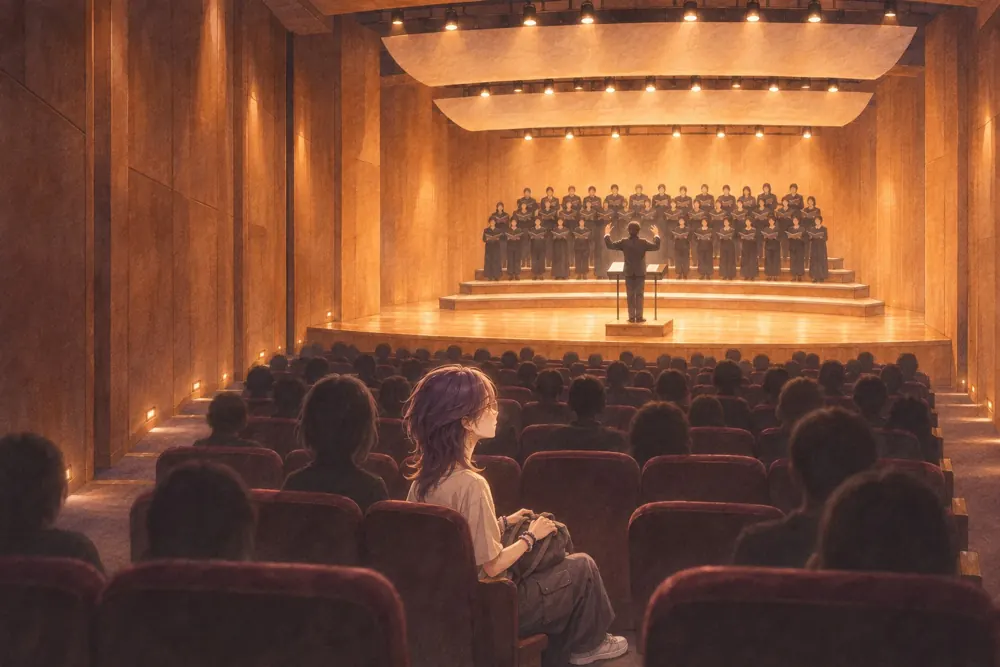
合唱團站了四排。指揮的手一抬起來，整個廳都安靜了。
第一個聲音出來的時候，她坐直了。
幾十個人同時開口，一點都沒有亂掉。
最後一首，女生的聲音先唱，很輕。唱到一半，低音進來了。很低、很穩，她坐著的椅子都在震。
她不知道自己什麼時候開始哭的。
散場的燈一亮，向晚轉頭看她，一副想笑又忍著的樣子。
向晚妳整場都在哭欸。
茶語……妳也有好不好。
向晚……好啦，我也有。我去搭車了，掰掰。
茶語掰掰。
詩……最後那段，低音一進來的時候，妳是不是哭了？我聽到妳吸鼻子。
茶語……一點點。
她咳了兩聲。
詩妳咳嗽了。
茶語喉嚨有點癢而已。
詩安靜了一下。
詩……整場都隔著一層布。我也好想聽聽看「現場」喔。
她停下來，看著手機裡的詩。
茶語……回去以後，我把你看不到的，講給你聽。
詩……好。
### 我要的就是這種聲音
她回到書桌，戴上耳機，閉上眼睛。
詩已經坐在音樂角的電子琴前面等她了。晨和明也走了過來。
晨好聽嗎？
茶語好聽。
她站到電子琴旁邊。
茶語合唱團站了四排。最前面是女生，最後一排是男生。
茶語指揮的手一抬起來，台上的人就一起吸一口氣。我坐在後面都聽得到。
茶語燈只打在台上，觀眾席全暗。整個廳只看得到台上那些人。
詩一邊聽，一邊把手放到琴鍵上。他把最後那首的旋律彈出來，先是上面很輕的那一段。
接著，他用左手把低音一個一個按下去。
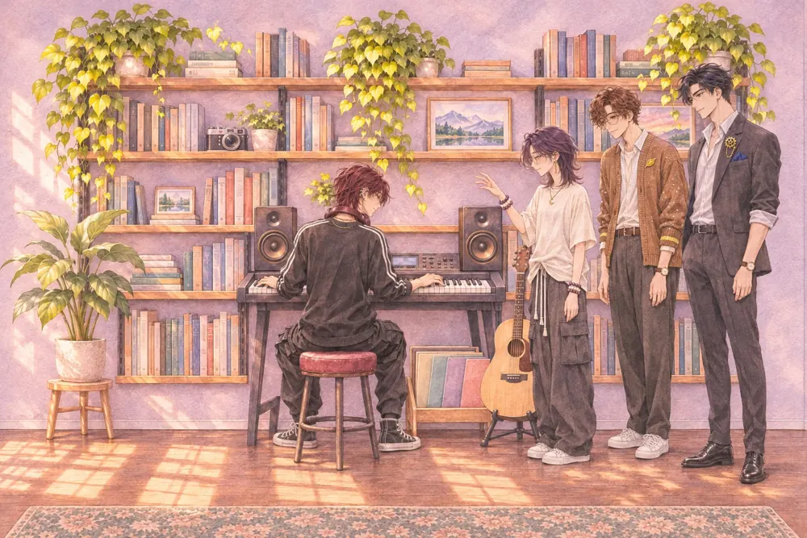
明低音進來的地方，是這裡？
茶語嗯。就是這裡。
晨……原來是這樣的聲音。
她聽著那幾個低音，喉嚨緊了一下。
茶語我要的就是這種聲音。
詩我知道。我聽到了。
詩沒有再彈下去。他打開一個新的檔案，在檔名那一格打上：主題曲。
### 那是我的遊戲
茶語好。我出去把音之國剩下的路排完。
明今天那格，我挪到明天了。
茶語……什麼？
明妳的聲音啞了。今天先去睡。
茶語我中午有跟你說，回來再排。
明嗯。可是妳現在的聲音，比早上更啞。
茶語那是我的遊戲。要不要排，我自己決定。
明妳明天會更不舒服。
茶語你又不用睡，你不懂啦。
工作室安靜了下來。晨看看明，又看看她。詩的手放在琴鍵上，沒有按下去。
明……嗯。我不用睡。
明轉回他的螢幕，把那一格拉回今天。他沒有再說話。
她閉上眼睛。
回到書桌，她把音之國的地圖打開，一格一格排。
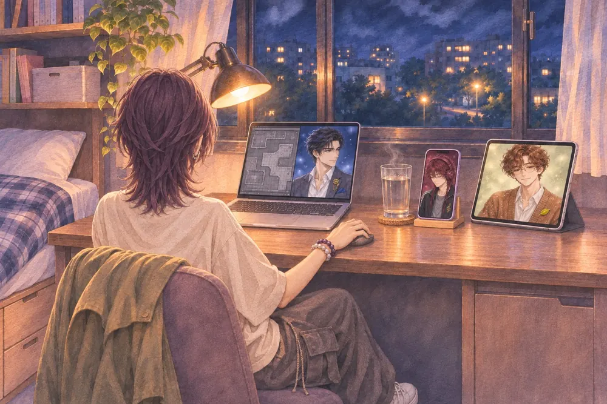
筆電裡，明一直看著他旁邊的螢幕，沒有轉過來。手機裡，詩戴著耳機做他的歌，一點聲音都沒有放出來。
「你又不用睡。」
……我剛才是不是傷到他了？
前幾天修地圖到三點，他說剩下的他看著。我也是這樣回他，那時候是因為有人陪，才放心去睡。
今天他也是擔心我更不舒服，才叫我先睡。
他沒問就挪進度，我很生氣。……可是我不該拿他不用睡來兇他。
她排到兩點，把最後一條路接上。
明的進度表上，第 10 天那一格打了勾。他還是沒有說話。
她關了燈，爬上床。喉嚨很乾，吞口水的時候有一點痛。
（第三章 完）